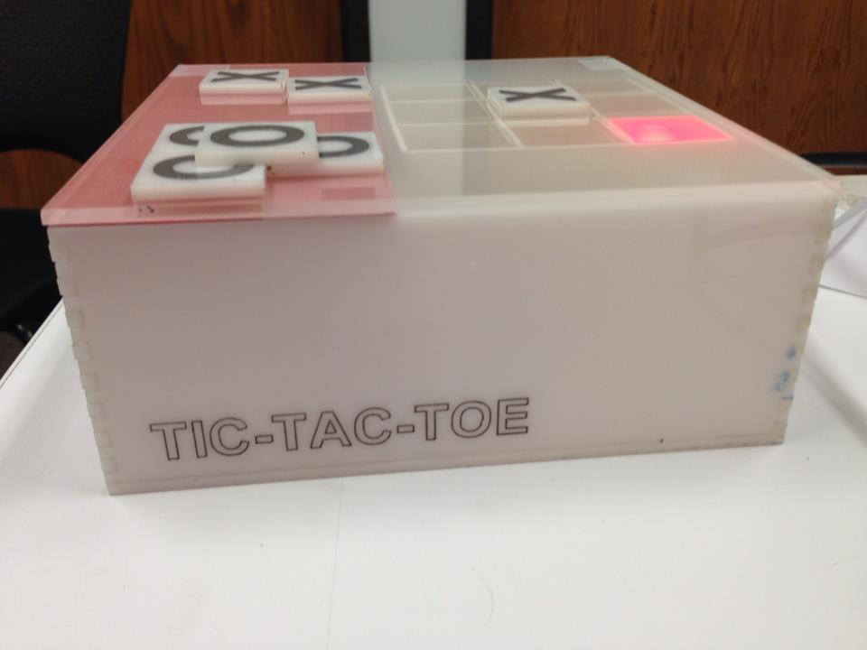
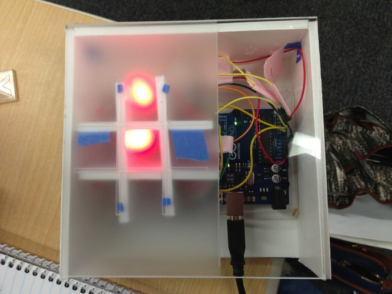
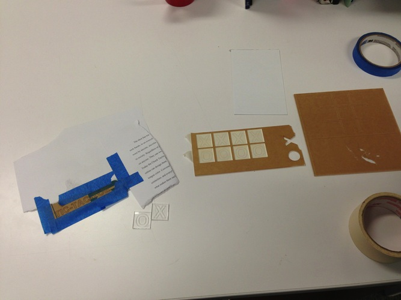
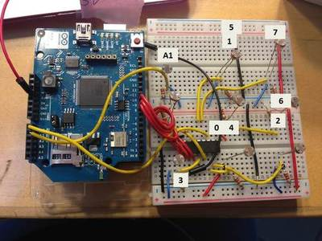

Wireless Tic-Tac-Toe
Arduino
How can families and friends play games with each other across distances? There are many web-based and mobile games that enable distance interactions amongst individuals. This project creates a prototype that utilizes the arduino microcontroller, LEDs, and photoresistors along to create a wireless tic-tac-toe game so that friends and families seperated by distance can play with each other.

- 
Tic-Tac-Toe Prototype
- 
Materials for Spray Painting
- 
photoresistor Mapping Schematic